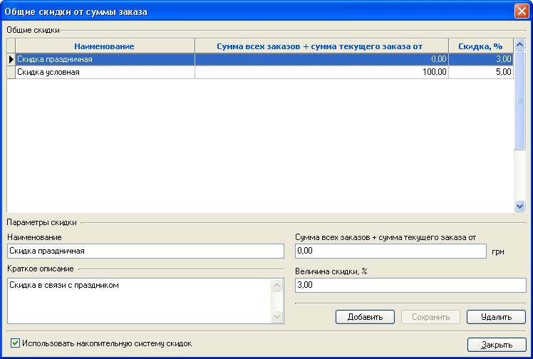
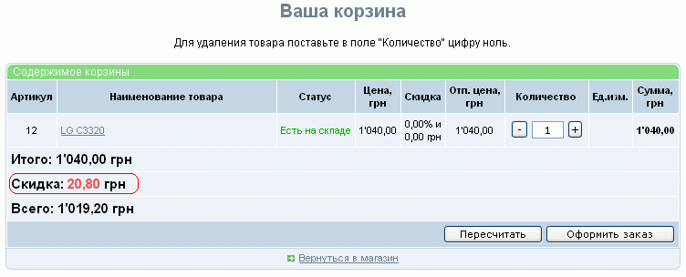

Помимо скидок, задаваемых в Менеджере скидок, действие которых распространяется на отдельные товары, в карточках которых указано, какие скидки применимы к этому товару, существуют также общие скидки. В зависимости от опции "Использовать накопительную систему скидок" их действие распространяется либо на сумму текущего заказа (опций не выбрана), либо на общую сумму заказов (без учета стоимости доставки), сделанных одним покупателем (с одного логина), включая сумму текущего заказа (опция выбрана).
Однако следует иметь в виду, что общие накопительные скидки не применяются для покупателей, которым назначена скидка в виде процента или категории (см. "Назначить параметры" в каталоге покупателей)
Задание общих скидок производится в окне, вызываемом из главного окна "Настройки - Общие накопительные скидки".
Значение накопительной скидки задается в относительном (процент) виде, условием применения является превышение определенной суммы всех заказов, включая сумму текущего заказа.

В случае, если сумма заказа подпадает под действие общей накопительной скидки, ее конкретная величина отображается при просмотре корзины под суммой "Итого" (дизайн страницы с указанной формой может отличаться от приведенного) :

Информация о применяемых общих накопительных скидках в произвольном виде может быть помещена в виде текстового блока или вынесена на отдельную страницу с текстом.